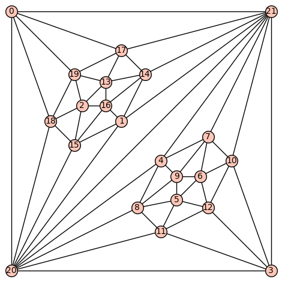

A SAT-based framework for exhaustive graph-theoretic search — supports graphs, digraphs, planar graphs, matroids, and other combinatorial structures by exploiting symmetries to prune the search space.
A SAT-based framework for investigating topological drawings via rotation systems — enables automated search and verification of combinatorial properties of graph drawings.
Tools and an extensive data collection for arrangements of pseudocircles, covering enumeration, realizability, and structural properties.
Algorithms and theory for representing graphs as contact graphs of convex polygons; includes a full computational study of k-gon contact representations.
A curated collection of point sets with rare combinatorial properties — both interesting individual configurations and well-known families from the literature (e.g. Horton sets) — serving as a reference resource for researchers in combinatorial and computational geometry.

Tutte-layout implementation for planar graphs — used for visualizations in the study of arrangements of pseudocircles.
SageMath implementation of the leafage algorithm for chordal graphs.